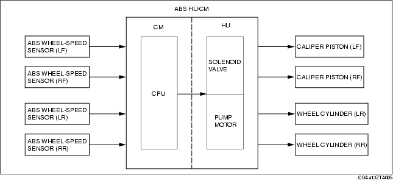

EBD control outline
• EBD control uses the ABS system to control brake fluid pressure distribution to the rear wheels so that they do not lock-up prior to the front wheels during braking, thereby preventing the loss of handling stability.
Features
• EBD control has independent control systems for both the front and rear wheels.
• EBD control constantly and properly distributes brake fluid pressure regardless of vehicle weight.
Structure
Block Diagram
